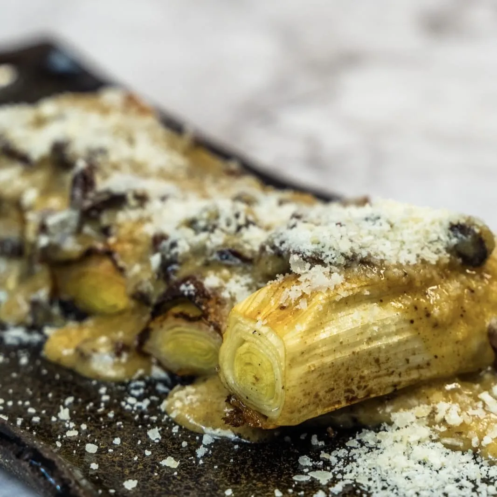

⏲ 15 minuts 👥 2/4 persones

Avui us proposem una recepta que es fa amb un pim-pam. Es tracta d’un porro escalivat, una cocció
que ens serveix per potenciar el sabor d’aquesta verdura, i que rematem amb una salsa amb bacó
fumat, similar a una falsa carbonara. Ideal per com a entrant, no té cap complicació i destaca per
la potència gustativa.
Ingredients:
- 4 porros
- 200g de bacó fumat
- 200g de parmesà en pols
- 3 rovells d'ou
- Un raig de brou de pollastre
- Mantega
- Oli, sal i pebre
- Netegem els porros, aprofitem la part blanca que la tallem trossos d’uns 10 cm i els col·loquem a la safata del forn amb un raig d’oli, sal i pebre. Ho deixem escalivar durant uns 25 minuts a 180/200 graus.
- En un bol batem els rovells d’ou, hi afegim el bacó fumat i el seu greix, el parmesà i una mica de brou de pollastre tebi.
- Per emplatar col·loquem els porros a la base del plat, ho salsem i ho acabem amb més formatge parmesà en pols!